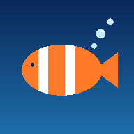

ReefGaugePrivacy
Effective 14 October 2026.
The short version. Your tank's readings stay on your own network unless you start a support session or turn on phone alerts. To register a display we keep your name, email and phone so we can support it, and those go only to our own server and our office computer. We never sell anything. Everything that leaves the display, and who receives it, is listed below.
This website
- It sets no cookies and runs no analytics or advertising.
- The page loads its font from Google Fonts, so Google sees your IP address when the page loads. Our web host, currently GitHub, keeps ordinary server logs.
The newsletter
- If you sign up, Buttondown, which runs the list for us, keeps your email address, when you signed up, and the IP address and page you signed up from.
- You confirm by email before anything is sent, and every email has a one-click unsubscribe link.
- We send launch news and the introductory price. We do not share the list.
The display
ReefGauge reads your controller and your Red Sea equipment over your own network, and keeps your readings, tests, photos and settings on the display itself. These are what leave it:
- Registration. During setup the display sends us:
- your first and last name, email and phone number
- the tank's name
- the display's serial number, unit ID and software version
- Weather. The display sends the location you set (as map coordinates) to Open-Meteo for the forecast. When you search for your town during setup, the search text goes to Open-Meteo too.
- Fish stores, on the Raspberry Pi version. When you open Fish stores, the display sends the location you set to our server. Our server looks up shops near you through Google, using that location rounded to about 5 km, and keeps the list for a week.
- Software updates. Every few hours the display checks for a newer version.
- The Android tablet asks our server and downloads updates from it.
- The Raspberry Pi version checks and downloads from GitHub, which hosts our release files. When it installs an update, it also fetches software packages from the public npm and Python package registries.
- Checking for the internet. The display checks it can reach the internet using a standard Google address, the same check phones and computers make.
- Fonts. The Raspberry Pi version's screen, and the pages your phone opens from either version, load a font from Google Fonts, so Google sees the IP address of the display or the phone.
- Remote support, only when you start it. A support session opens only when you choose it on the screen and give us the code. While it is open:
- We can see the display's status, settings, current readings and recent log.
- We can change its settings, restart it or install a software update. The display lists any settings we change.
- We may use Claude, an AI assistant made by Anthropic, to read the display's status and log and suggest a fix. Claude is not given your name, email or phone.
- Phone alerts, on the Raspberry Pi version, only if you turn them on. Alert messages, including the reading that set them off, travel to your phone through ntfy.sh.
- Your phone. Backups, photos and lab results move between the display and your phone over your own network. They do not come to us.
Email to us
Mail to admin@reefgauge.com is held by Microsoft 365, which hosts our mailbox.
Who else sees it
No one buys or rents your information from us, ever.
- Your registration details. When the display tells you these are kept confidential and never disclosed outside ReefGauge, this is what that means:
- They go only to our own server, hosted for us by DigitalOcean, and to our office computer.
- If you write to us, they are also in our mailbox at Microsoft.
- Those providers act for us and may not use them for anything else.
- Services that run parts of ReefGauge for us: DigitalOcean (our server), Buttondown (the newsletter), Microsoft (our mailbox) and GitHub (this website and the Raspberry Pi version's updates).
- Independent services the display or the site talk to, under their own privacy policies:
- Open-Meteo (weather and town search)
- Google (fonts, the internet check and fish-store search)
- the npm and Python package registries (Raspberry Pi updates)
- ntfy.sh (phone alerts, only if you turn them on)
- Anthropic (Claude, during a support session)
- The law. We will disclose information if the law requires it.
How long we keep it, and your choices
- Registration details. We keep these while you use the display and for as long as we support it.
- Newsletter address. We keep this until you unsubscribe.
- Changes and deletion. To see, correct or delete what we hold about you, email admin@reefgauge.com. We will do it, normally within 30 days.
- Do Not Track. We do not track you across other sites, so a browser's Do Not Track setting changes nothing here.
- Children. ReefGauge is not aimed at children under 13, and we do not knowingly collect their information.
Changes
If this policy changes, the new version will be posted here with a new effective date.